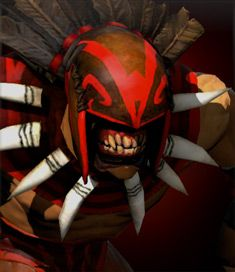

Dota Manual
Dota добра

Bloodseeker

Біографія
Стрігвір - минулий ритуали мисливець; гончак безшкірі близнюків, відправлена з туманних вершин Ксакатокатля на пошуки крові. Щоб наситити близнюків, потрібні воістину океани життєвих соків, і гірська імперія вже давно б спорожніла, що не зумій жерці з верхніх плато задобрити богів. Тому Стрігвір нишпорить по світу в пошуках кривавих битв. Життєва енергія будь пролитої ним крові тут же передається безшкірі близнюкам через священні знаки на його зброю і броні. Пройшли багато років, а Стрігвір все ще неустанну, як скажений пес, і лютий в бою, як ненаситний шакал. Кажуть, що в кровопролитному бою під його маскою можна розгледіти риси самих близнюків, особисто спрямовують свою гончу.
| 24 + 2.7 | |||||
| 22 + 3.4 | |||||
| 18 + 1.7 | |||||
| 33 - 39 | |||||
| 2 | |||||
| 300 | |||||
| Рівень | 1 | 15 | 25 | 30 | |
|---|---|---|---|---|---|
| Пошкодження | 55-61 | 102-108 | 136-142 | 153-159 | |
| Здоров'я | 680 | 1420 | 1960 | 2240 | |
| Мана | 291 | 567 | 771 | 879 | |
| Захист | 5.52 | 13.14 | 18.58 | 21.3 | |
| Час атаки | 1.33 | 0.91 | 0.74 | 0.68 | |
| Атак в секунду | 0.72 | 1 | 1.2 | 1.3 | |
| Дальність огляду | 1800 / 800 | ||||
| Дальність атаки | 150 (ближній бій) | ||||
| Базовий реген | 0 | ||||
| Базовый манареген | 0 | ||||
| Дерево навичок | Рівень | Навик | |||
| 25 | + 14% до макс. швидкості пересування від Thirst | -5 сек. перезарядки Blood Rite | |||
| 20 | + 20% до вампіризму | +475 до дальності застосування Rupture | |||
| 15 | +60 до втрат від Blood Rite | +225 до здоров'я | |||
| 10 | +5 до броні | +20 до швидкості атаки | |||